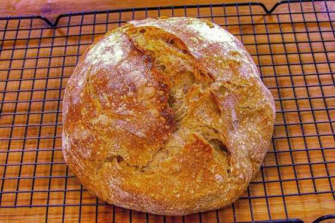
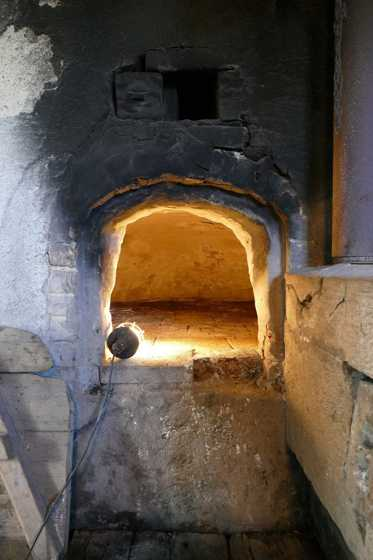

STORY
お店のこと
「Marco’s BAGELRY」は、茨城県笠間市下市毛のベーグル店です。2011年ごろのブログ記事によると、店主の方はカナダで食べたベーグルに感動し、自分でも作り始めたそうです。
- カナダで食べたベーグルに感動して、ベーグル作りを始めた(2011年のブログ記事より)
- 元ラーメン店だった建物を改装し、国道355号沿いの複数店舗が入る敷地内にある。目印はピンク色の建物(紹介記事より)
- 店内の壁は店主自身が塗り、アンティークのショーケースも自ら探した(2011年のブログ記事より)
- 当時は週に1日だけの営業(日曜)で、午後早くに売り切れることもあった(ブログ・紹介記事より)
以上は数年前の紹介記事やブログに基づく情報です。現在の営業日・営業状況は確認できていません。店名の「Marco’s」の由来も確認できていないため、ここでは触れません。このページの語り口や配色(カナダのメープルを思わせる赤と、ピンクの建物にちなんだ色)は制作側のイメージです。





MENU
メニュー
紹介記事によると、プレーン(150円)が一番人気で、トマトやオレンジレーズンなどの味、ベーグルサンドもあり、いずれも200円未満だったそうです。現在の品ぞろえ・価格は確認できていません。
| メニュー・価格 | 準備中 |
|---|---|
| 営業時間 | 準備中 |
| 定休日 | 準備中 |
| 電話 | 準備中 |


掲載写真はすべてフリー素材のイメージです。店舗の実際の様子・商品ではありません。
VOICE
口コミ
イメージ例
もちもちで噛むほど味が出ます。プレーンをそのままいただくのが好きです。
イメージ例
ピンクの建物が目印で、迷わず行けました。早めに行くのがおすすめだと思います。
イメージ例
手作りのあたたかい雰囲気で、家に帰ってからの朝ごはんが楽しみになりました。
上の3件は制作側が作成したイメージ例で、実際のお客様の声ではありません。
ACCESS
アクセス
| 住所 | 〒309-1626 茨城県笠間市下市毛1425-1 |
|---|---|
| 電話 | 準備中 |
| @marcosbagelry |